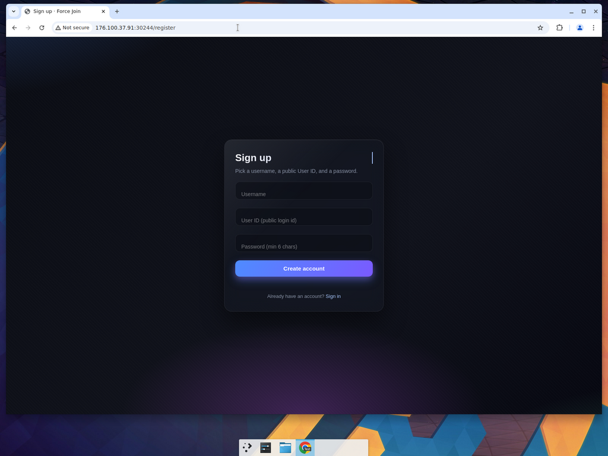
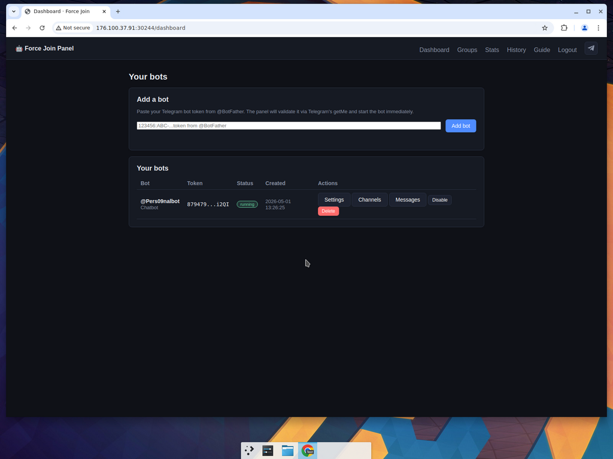
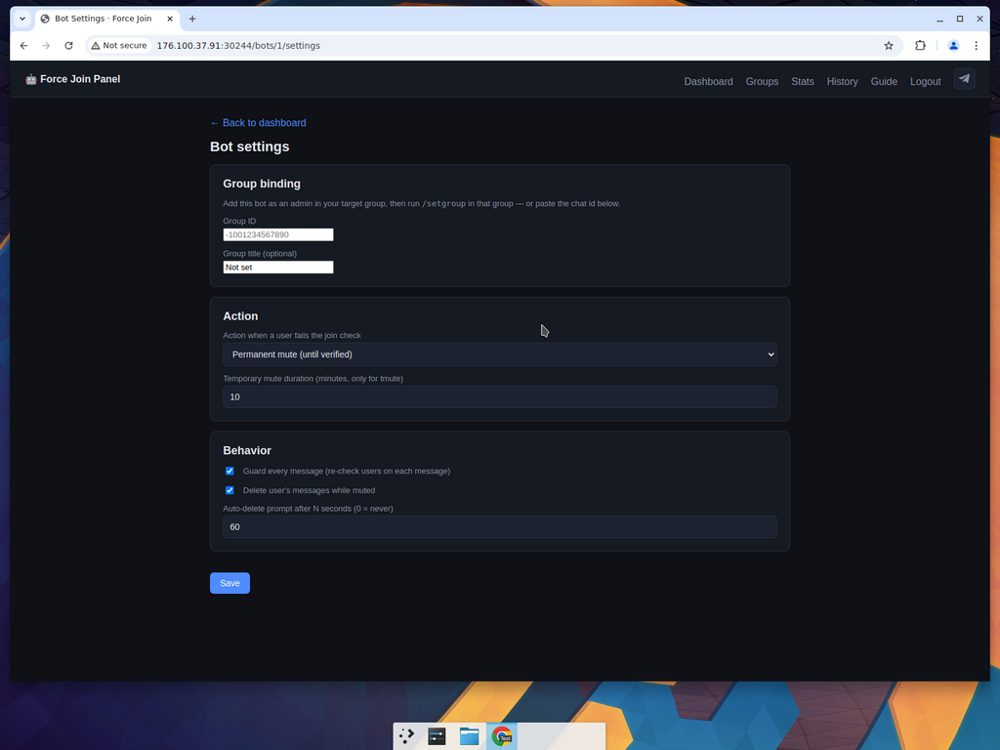
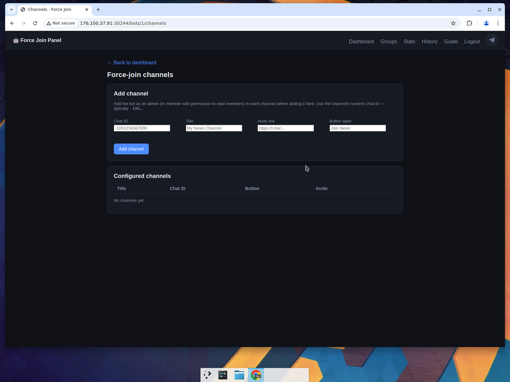
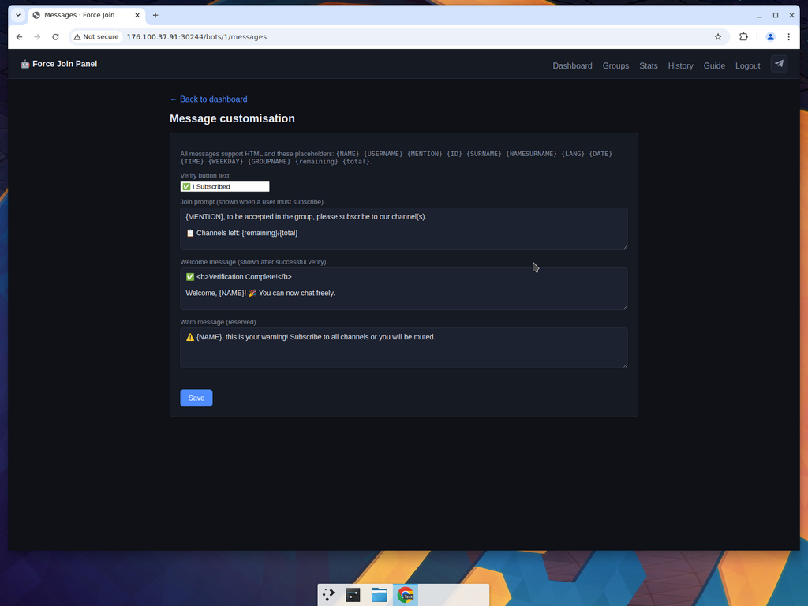
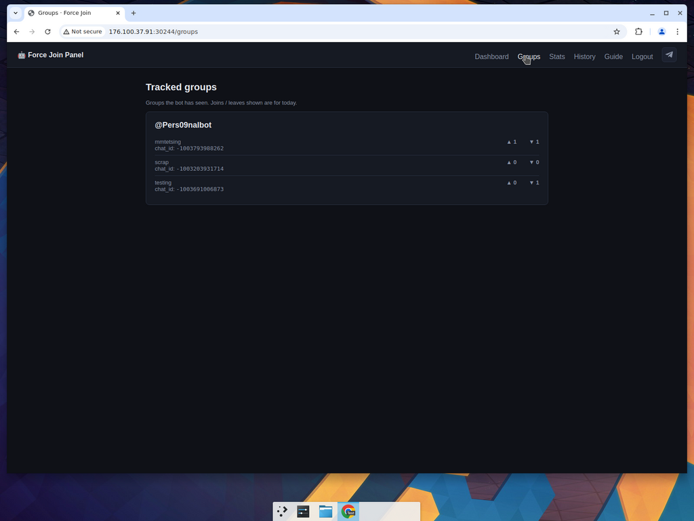
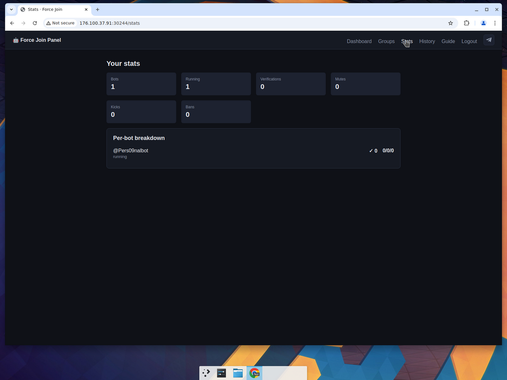
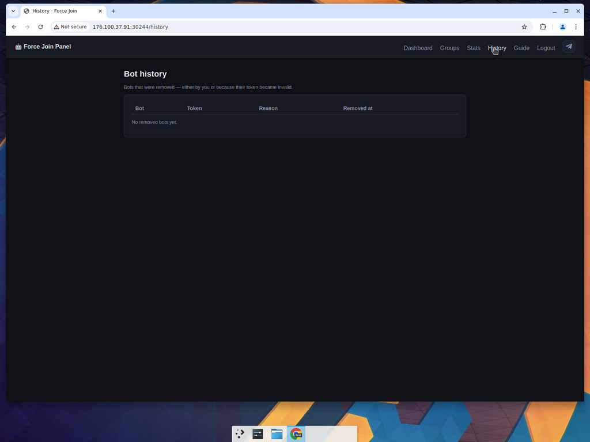
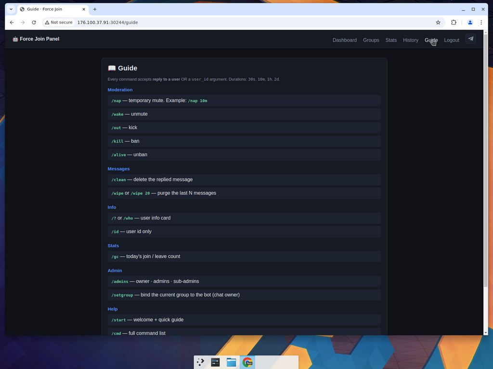

Force Join Panel — User Guide
Connect your Telegram bot, decide which channels users must subscribe to before they can chat in your group, and run powerful moderation commands directly from Telegram.
Panel: http://176.100.37.91:30244/ Click any link to jump straight into the panel
Quick start (5 steps)
1Sign up
Create an account with a Username, User ID and Password.
2Sign in
Log in to reach your Dashboard.
3Add a bot
Get a token from @BotFather and paste it on the Dashboard.
4Bind a group
Add the bot to your group as admin, then send /setgroup in the group — or paste the chat ID in Settings.
5Add channels
Open the bot's Channels page and list every channel users must subscribe to. Done!
1. Create an account
Open http://176.100.37.91:30244/register.

| Field | What to put |
|---|---|
| Username | Your display name. |
| User ID (public login id) | A unique numeric or text id you'll use to log in. Pick something memorable — it cannot be changed later. |
| Password | Minimum 6 characters. |
Click Create account. Already have one? Use Sign in instead.
2. Sign in
Login page: http://176.100.37.91:30244/login
Enter your User ID or Username and your Password, then click Login. You'll be redirected to your Dashboard.
To log out, click Logout on the top-right of every page.
3. Add your Telegram bot
Once signed in you land on the Dashboard.

3a. Get a bot token
- Open Telegram and message @BotFather.
- Send
/newbotand follow the prompts (pick a name and a @username ending inbot). - BotFather replies with an HTTP API token like
123456:ABC-DEF....
Keep this token secret — anyone with it can control your bot.
3b. Paste the token into the panel
On the Dashboard, paste the token into Add a bot and click Add bot. The panel validates the token via Telegram's getMe and starts the bot immediately.
| Column | Meaning |
|---|---|
| Bot | The bot's @username and short label. |
| Token | A masked preview (first/last chars only). |
| Status | running — the bot is online and polling Telegram. |
| Created | When you added the bot. |
| Actions | Settings · Channels · Messages · Disable · Delete |
Disable vs Delete: Disable pauses polling — you can re-enable later. Delete removes the bot from your account and moves it to the History page.
4. Bot Settings
Click Settings next to your bot on the Dashboard.

Group binding
Each bot moderates one Telegram group at a time:
- Add the bot to the group as administrator, with at least:
- Restrict members (so it can mute / kick / ban)
- Delete messages (so it can clean spam)
- Either:
- Send
/setgroupinside the group from the chat owner's account, or - Open the bot's Settings page and paste the Group ID (typically starts with
-100...) and an optional Group title, then click Save.
- Send
Action — what to do when a user fails the join check
| Action | Effect |
|---|---|
| Permanent mute (until verified) | Default & recommended. User stays muted until they subscribe to every channel and tap the Verify button. |
| Temporary mute | User is muted for the duration in minutes set in Temporary mute duration. |
| Kick | User is removed from the group (can rejoin). |
| Ban | User is permanently banned. |
Set Temporary mute duration in minutes (e.g. 10) when using Temporary mute.
Behavior
- Guard every message — re-checks each user's subscription status on every message they send. Disable on huge groups where this would create rate-limit pressure.
- Delete user's messages while muted — automatically removes anything a muted user posts.
- Auto-delete prompt after N seconds — the join prompt the bot posts disappears after this many seconds (
0= keep forever). Useful to keep the chat clean.
Click Save. Changes apply instantly — no restart needed.
5. Force-join Channels
Click Channels next to your bot on the Dashboard.

This is where you list the channels your members must subscribe to before they can chat.
Add a channel
- Add the bot as an admin of the channel — or at minimum as a member with permission to read the member list. Without this, Telegram will not tell the bot whether a user is subscribed.
- Fill in the form:
Field What to put Example Chat ID The channel's numeric chat id. Public channels can also use @username. Numeric ids start with-100....-1001234567890Title Friendly name shown in the join prompt. My News Channel Invite link The https://t.me/...link users tap to join.https://t.me/MyNewsChannelButton label Text on the inline button. Join News - Click Add channel.
The channel appears in the Configured channels table. Repeat for as many channels as you want — the bot will require subscription to all of them.
Remove a channel
Click the trash / remove control next to the channel row in the Configured channels table.
How do I find a channel's chat ID? Forward any message from the channel to a bot like @JsonDumpBot or @userinfobot — the chat.id field is what you need.
6. Message customisation
Click Messages next to your bot on the Dashboard.

All four messages support HTML formatting (e.g. <b>bold</b>, <i>italic</i>, <a href="...">link</a>) and the placeholders below.
Available placeholders
| Placeholder | Replaced with |
|---|---|
{NAME} | First name |
{SURNAME} | Last name |
{NAMESURNAME} | First + last name |
{USERNAME} | @username (or empty) |
{MENTION} | A clickable mention of the user |
{ID} | Numeric Telegram user id |
{LANG} | Telegram language code (e.g. en, it) |
{DATE} · {TIME} · {WEEKDAY} | Current date / time / weekday |
{GROUPNAME} | The bound group's title |
{remaining} / {total} | Channels still to join / total channels |
The four messages
| Message | When it shows | Default |
|---|---|---|
| Verify button text | Caption of the inline button users tap after subscribing. | I Subscribed |
| Join prompt | Posted in the group when an unverified user tries to chat. | {MENTION}, to be accepted in the group, please subscribe to our channel(s). Channels left: {remaining}/{total} |
| Welcome message | Sent after a user successfully verifies. | <b>Verification Complete!</b> Welcome, {NAME}! You can now chat freely. |
| Warn message | Reserved warning the bot can send before muting. | {NAME}, this is your warning! Subscribe to all channels or you will be muted. |
Click Save when done.
7. Groups, Stats & History
Groups — /groups

Lists every group your bot has seen, grouped by bot. Each row shows the group title and chat_id, plus today's ▲ joins and ▼ leaves. Use this to confirm the bot is correctly bound and reading group activity.
Stats — /stats

Account-wide totals plus a per-bot breakdown.
| Metric | Meaning |
|---|---|
| Bots | Total bots registered to your account. |
| Running | Bots currently polling Telegram. |
| Verifications | Users who completed the subscribe-and-tap flow. |
| Mutes / Kicks / Bans | Moderation actions performed by your bots. |
History — /history

A log of bots that were removed — either by you (via Delete) or because their token was revoked. Columns: Bot, Token (masked), Reason, Removed at. If a bot disappears unexpectedly, this page tells you why.
8. In-Telegram commands
The same list lives in the panel: http://176.100.37.91:30244/guide

Every command accepts either a reply to a user or auser_idargument. Durations:30s,10m,1h,2d.
Moderation
| Command | What it does | Example |
|---|---|---|
/nap | Temporary mute. | /nap 10m (reply to user) |
/wake | Unmute. | /wake (reply to user) |
/out | Kick (user can rejoin). | /out |
/kill | Ban (permanent). | /kill |
/alive | Unban. | /alive 123456789 |
Messages
| Command | What it does |
|---|---|
/clean | Delete the message you reply to. |
/wipe · /wipe N | Purge the last N messages (default = recent batch). |
Info
| Command | What it does |
|---|---|
/? · /who | Show a user info card (name, username, id, language...). |
/id | Reply with just the user's numeric id. |
Stats · Admin · Help
| Command | What it does |
|---|---|
/gc | Today's join / leave count for the current group. |
/admins | Show owner, admins, and sub-admins. |
/setgroup | Bind the current group to the bot. Must be sent by the chat owner. |
/start | Welcome screen + quick guide. |
/cmd | Full command list inside Telegram. |
9. Tips & troubleshooting
- Required The bot must be admin in the group with both Restrict members and Delete messages permissions. Without these, mute/kick/ban and message-cleaning silently fail.
- For
/gcto record joins/leaves accurately, the bot needs permission to see chat-member updates — the panel already requests this automatically. - You can Disable a bot from the Dashboard at any time — its polling stops immediately. Click Enable to resume.
- Channel verification doesn't work? Confirm the bot is added to that channel as an admin (or member with view-members permission). If the bot isn't in the channel, Telegram won't tell it who is subscribed.
- Token revoked? If you regenerate the token in @BotFather, the old one stops working — the panel will move the bot to History. Add it again with the new token.
- Forgot your User ID? Sign in with either your Username or your User ID on the login page.
10. Support
Questions or feature requests? Hop into the support channel: @SilentPromo on Telegram (also linked from the paper-plane icon in the top right of the panel).